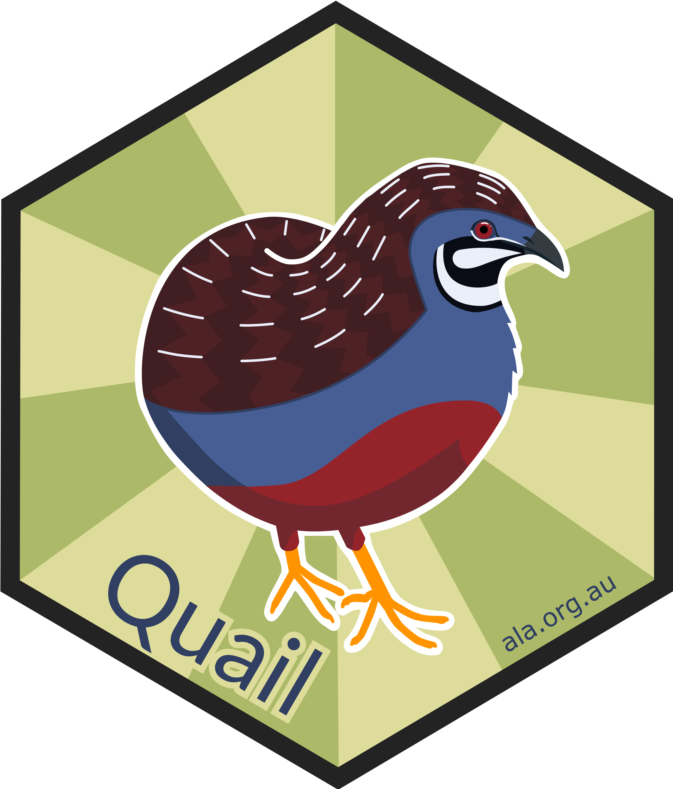
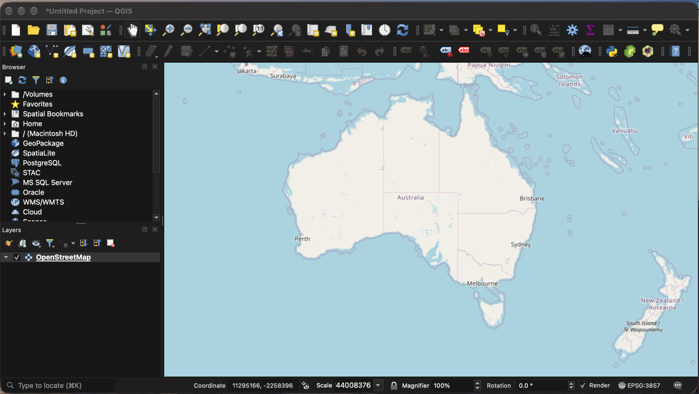
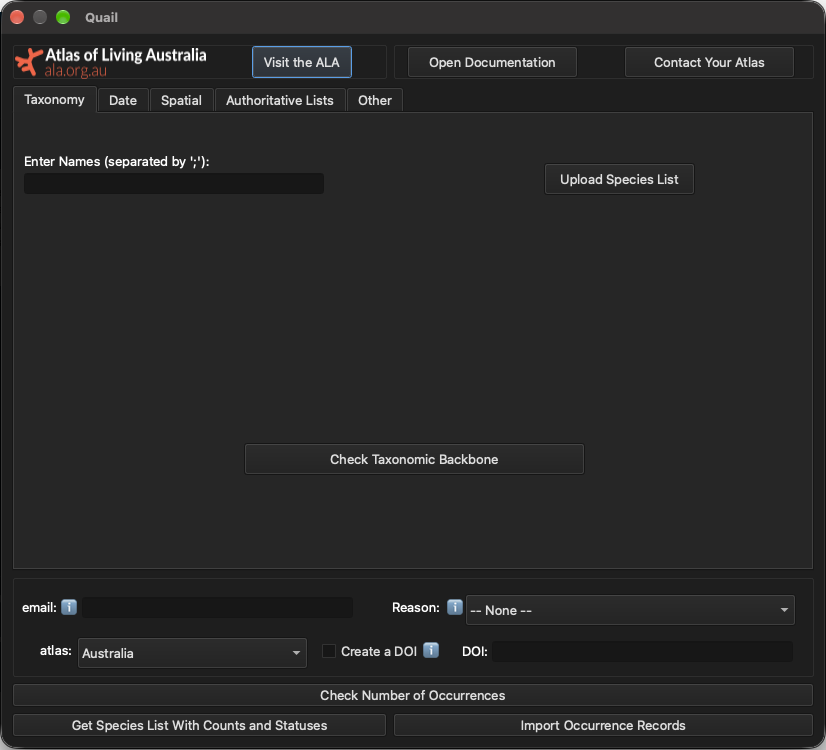
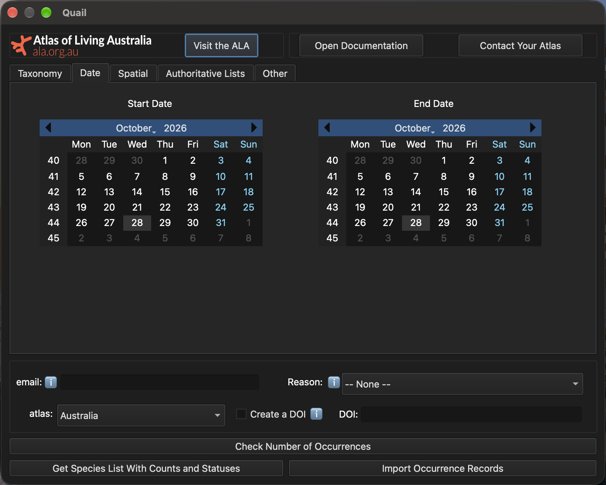
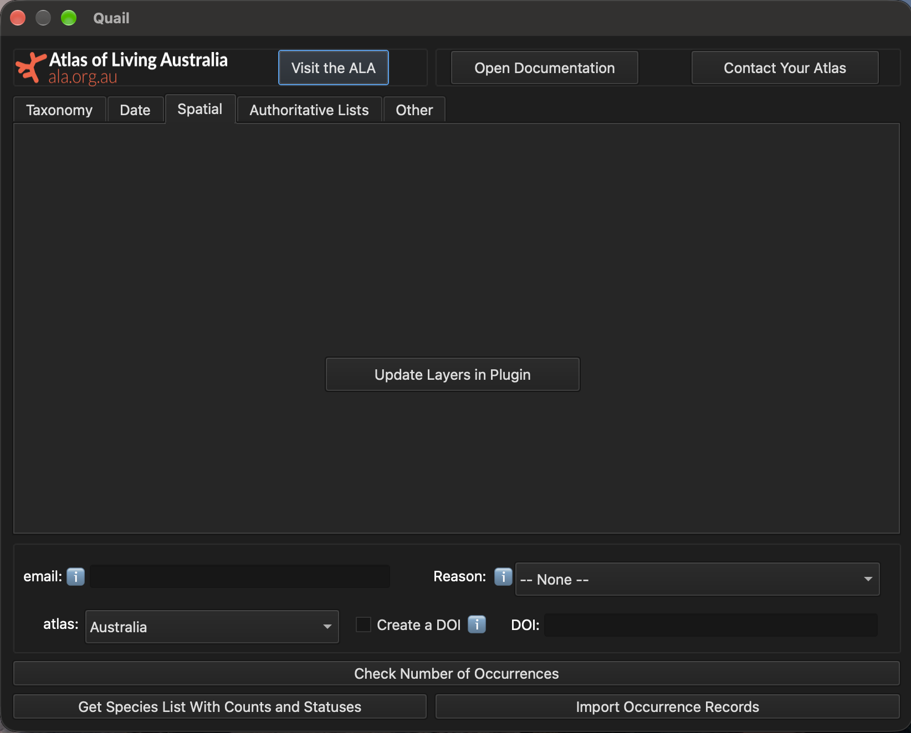
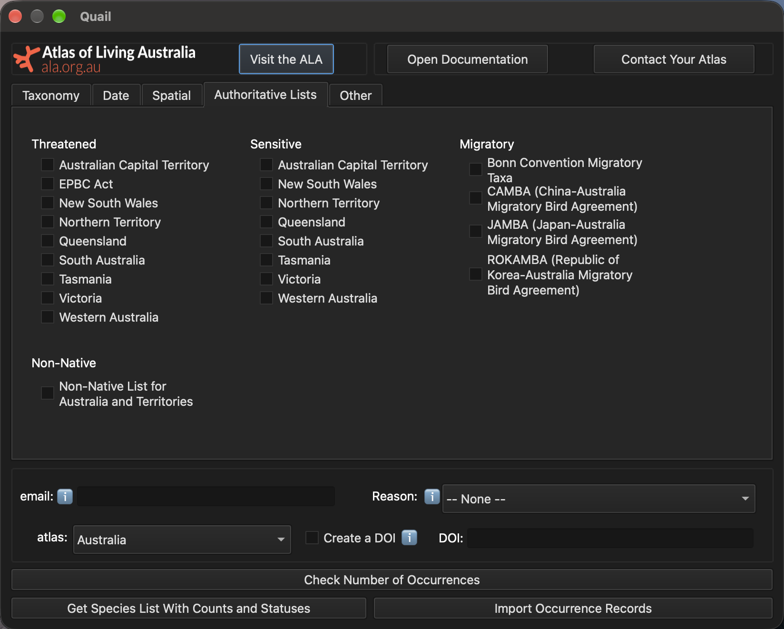
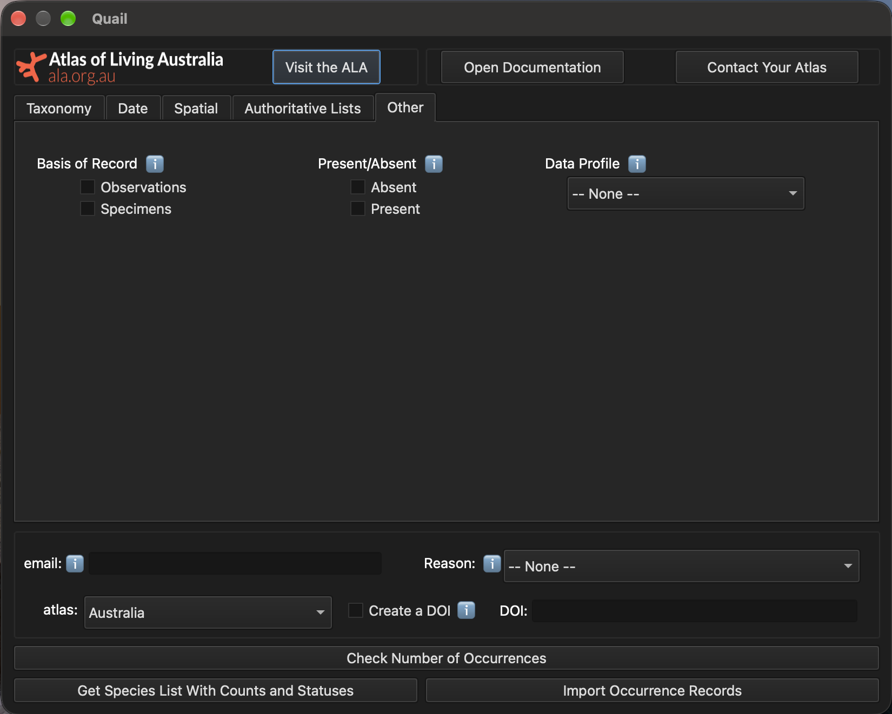

Quail: A QGIS Plugin for accessing biodiversity data from the Living Atlases
| Taxonomy* | Spatial** | Date | Authoritative Lists | Generate DOI | |
| ✓ | ✓ | ✓ | |||
| ✓ | ✓ | ✓ | ✓ | ||
| ✓ | |||||
| ✓ | |||||
| ✓ | ✓ | ✓ |

Features
Features

Features

Features

Features

Features
Features
Features
Features
Features
Getting Data
Getting Data
Getting Data
Amanda Buyan
Data Engineer
Atlas of Living Australia
amanda.buyan@csiro.au
acbuyan
Poster: #XXXX
Quail documentation: